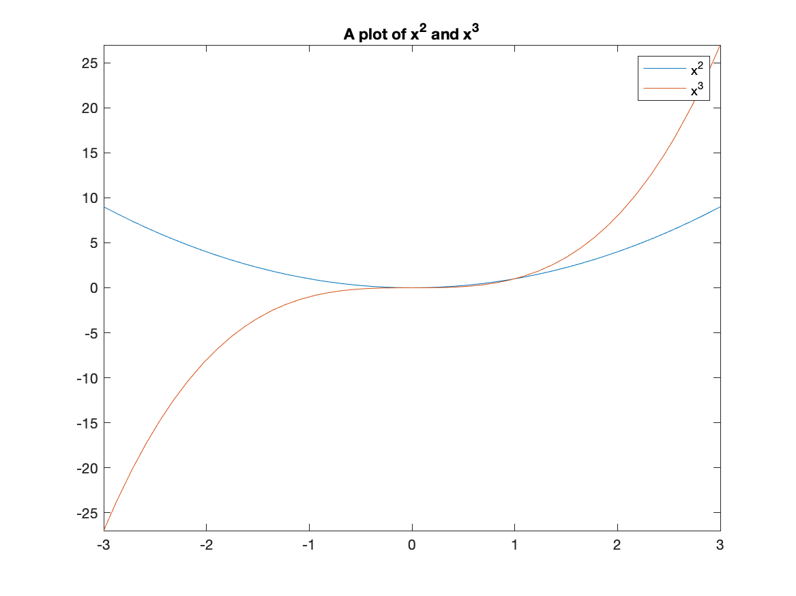
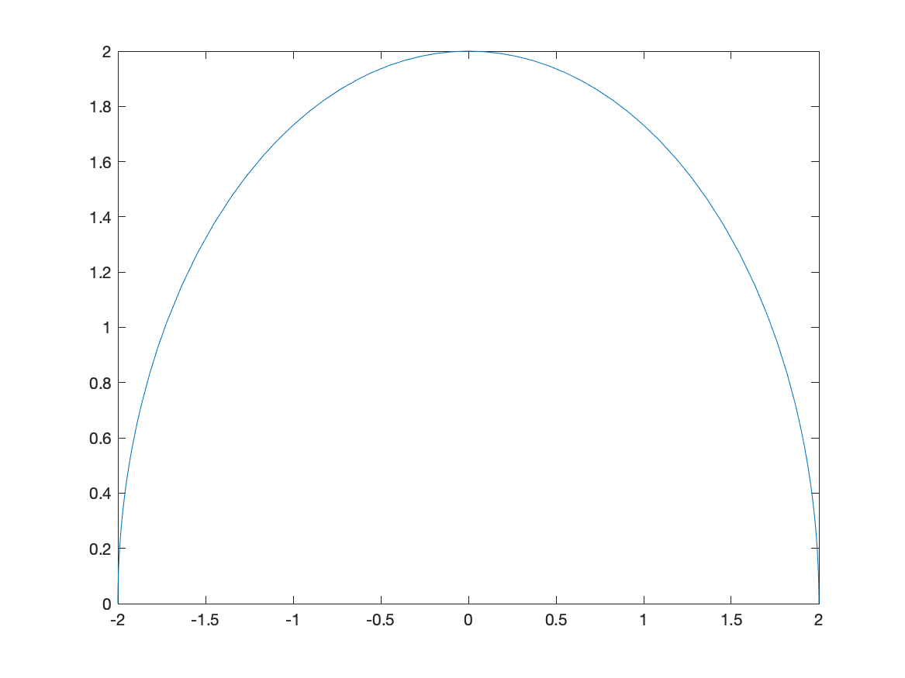

Below we will be plotting \(x^{2}\) with many different options. In the case of \(x^{2}\) it is short enough to type out each time, but if we have a complicated function, we probably don’t want to. In such a case, we will store the expression as a name. To do this, we’ll use =. For example
f=x^2will give the expression \(x^{2}\) a name (or a variable in the computer science sense) called f. Note: if you get an error, like x not defined, don’t forget to tell matlab that \(x\) is a symbolic variable with syms x.
By “doing” something to f, we are in fact doing that to \(x^{2}\). A better example is if we type
g=(x+2)^2and the we can expand it by
expand(g)which returns \(x^{2}+4x+4\).
We can store numbers, equations, expressions (and other things) using the same syntax. For example
eqn:=x^2=9and then solve(eqn) returns 3,-3, the two solutions to the equation \(x^{2}=9\).
The rules for giving something a name is that it contain a digit, a letter (upper- or lower-case) or an _ (underscore). It must also start with a letter.
Most CAS systems will produce very nice plots and Matlab is among these. The standard plot will be that of a function, but we will see that plotting multiple functions and points is also possible. Matlab is very flexible in creating plots.
In order to plot the expression \(x^{2}\), try typing fplot(x^2). You should see a plot similar to
Typically, the easiest way to change the plotting window of the plot is to use an option in the plot command. For example, if we want a plot on the interval \([-2,2]\), then typing fplot(x^2,[-2 2]) will produce the plot:
If you want to make sure that the axes include other y values, you can adjust the limits after the fact. After you have the plot, try ylim([-2 2]) which will generate:
If you’d like a title on your plot, you can add the title option. For example, try
fplot(x^2,[-2 2])
title("A plot of x^2")and you will see

Notice that matlab does some fancy formatting in that it formats x^2 as a power. You can put latex commands in the title (we will see what latex is later in the course.)
Plot \(f(x) = \sin x\) on the domain \([−6.25, 6.25]\). Give the plot a title that includes the function.
I’m sure you notice (since you are quite astute) that the tick marks are in decimals and it would be nice to see the function plot in fractions of \(\pi\) instead. We can change this with the xticks and xticklabels functions. Here is a cosine plot with some nicer ticks:
fplot(cos(x),[-2*pi 2*pi])
S = sym(-2*pi:pi/2:2*pi);
xticks(double(S))
xticklabels(arrayfun(@texlabel,S,'UniformOutput',false))and the result is:
![Plot of \cos(x) on [-2\pi,2\pi]](images/ch02/plot05.png)
Often, we would like to include more that one function on a single set of axes. Matlab does this by doing multiple plots but holding the plot. Here is how to plot both \(x^2\) and \(x^3\).
fplot([x^2, x^3],[-3,3])The result is:
A legend is important for any plot containing more than one function. This allows you to distinguish between the curves. There is a legend option to the plot function. For example, to add a legend and a title to the plot of \(x^{2}\) and \(x^{3}\) type:
fplot([x^2 x^3], [-3,3])
title("A plot of x^2 and x^3")
legend("x^2","x^3")and you will see: 
Graph the functions \(\sin x, \sin 2x,\) and \(2 \sin x\) on the same coordinate axis. Label your graphs using the legend, and change your plot range to \(−2\pi \leq x \leq 2\pi\) and \(−2.5 \leq y \leq 2.5\).
Hint: see above on getting multiples of \(\pi/2\) for you \(x\) tick marks.
Recall that the function \(f(x)=\sqrt{4-x^2}\) is the top half of a circle. If we plot this with
fplot(sqrt(4-x^2),[-2 2])we’ll get the following plot: 
and this just doesn’t look like a circle. This is because the aspect ratio isn’t 1–this means that 1 unit in the x-direction and 1 unit in the y-direction are not equal.
We can do that in Matlab with the following:
fplot(sqrt(4-x^2),[-2 2])
daspect([1 1 1])and the result is: 
Note: there are three numbers here because we will see 3D plots need can have different aspects as well. Matlab does this in general by ensuring that it know the relative sizes of all three axes.
Plot the functions \(f(x)=2x+3\) and \(g(x)=-\frac{1}{2}x+1\) and make the plot ratio 1:1. The two lines should be perpendicular. (Why?)
Maple is also helpful in understanding how a parameter (a variable that just takes on certain values) affects a plot. For example, if we plot \(y=x^2+C\) for \(C=-2,-1,0,1,2\) and we want to see what happens to the plot.
To make this easier, we first define the functions:
curves=[x^2-2,x^2-1,x^2,x^2+1,x^2+2]then plot the results and add a legend:
curves=[x^2-2,x^2-1,x^2,x^2+1,x^2+2]
fplot(curves)
title("The family of curves x^2+C")
legend("C=-2","C=-1","C=0","C=1","C=2")the result will be:

And from this you can see that the parameter C shifts the lines vertically.
Another common plot is that of a piecewise function, consider \[f(x) = \begin{cases} x & x<0 \\ 3-x^{2} & x \geq 0 \end{cases}\]
We will see a way to create functions like this later in the course, but here we will plot them. Recall that what this means is that the function \(f\) takes on the values of \(x\) when \(x<0\) and when \(x \geq 0\), then it has the functional form \(3-x^2\). We wil plot this by creating a plot with two different curves on it.
The way to enter this in is the following:
f(x) = piecewise(x<0,x,x>=0,3-x^2)
fplot(f(x), [-3 3])and this results in the following plot: 
The vertical line connecting (0,0) with (0,3) is not part of the plot. Matlab simply just connects a bunch of points. Sometimes it seems that it can figure out that it’s not part of the plot. Unfortunately, if it doesn’t automatically remove the line, you need to do something different.
fplot(f(x),[0,3])
hold on
fplot(f(x),[-3,-0.0001])
hold offresults in

which is better but it looks like two different curves becaues the two pieces are different colors. We can set them both to be the same color with:
fplot(f(x),[0,3],'blue')
hold on
fplot(f(x),[-3,-0.0001],'blue')
hold offPlot the piecewise function:
\[ f(x) = \begin{cases} 1-(x-\pi/2)^2 & x > \frac{\pi}{2} \\ 1 & -\frac{\pi}{2} \leq x \leq \frac{\pi}{2} \\ \sin x & x < -\frac{\pi}{2} \\ \end{cases} \]
Although Matlab doesn’t often pick up on jump discontinuities from piecewise functions, it does to well with other types. Consider:
fplot(1/(x-1),[-3,3])which has the result:

The vertical dashed line is a vertical asymptote in this case.
Plot \(f(x) = \tan(x)\) on \([-3\pi,3\pi]\) and use multiples of \(\pi/2\) for the horizontal labels. Hint: see above to do this. Does Matlab correctly pick up the vertical asymptotes in this case?
A scatter plot is a set of points plotted in the \(xy\)-plane. Consider the points \((0,1),(1,0),(2,1),(3,0)\). We will see how to plot this.
For this, we create a vectors of the x points and y points:
x=[0,1,2,3]
y=[1,0,1,0]and the call the function scatter:
scatter(x,y)resulting in

scatter in the help documentation. There is a number of ways to change the size, shaped and color of the dots.
At the bottom of the scatter documentation has all of the options.
We can combine a scatter and function plots using the hold command. Let’s say we have the points: (0,10),(2,9),(3,7),(5,6),(7,4),(8,2) and we wish to plot a best fit line as well. First, let’s define the points
x = [0,2,3,5,7,8];
y = [10,9,7,6,4,2];Later we will show how to get a best-fit line
scatter(x,y,100,'blue','filled');
hold on
fplot(@(x) 10.8665-0.9680*x,[-0.5,9])
hold offThis will produce a plot that looks like: